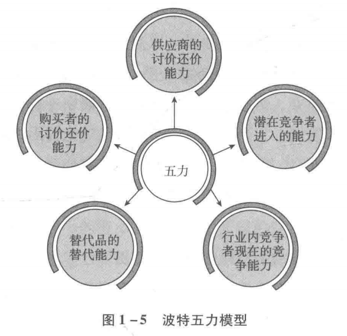

优质企业的特征
一、寻找优质企业的两种路径
1.1 自上而下式：先选行业，再选企业
思考路线
- 前瞻性地找出未来发展空间较大的行业——先找到一张可能越来越大的饼；
- 再在该行业内寻找一家或几家具备优势或潜在优势的企业——即未来可能在这张大饼中获取较大份额的企业；
- 如有条件，还可以在选择行业之前加上选择国家，首选经济增速可能较快的国家，再在其中挑选发展空间大的行业。
能力要求
这种方法对投资者个人的商业前瞻能力要求较高，需要具备识别产业机会的能力，能大概率判断出未来某产业的腾飞。
大部分成功的风险投资家以及大部分成功的企业家，都是因为选择了正确的行业，站在了风口。你是一只天鹅，大风会助你翱翔天空；你是一头笨象，大风也会推你化身飞天神象。
1.2 自下而上式：从企业本身出发
自下而上式也有两大类投资方法，侧重点截然不同。
（1）侧重寻找严重低估——格雷厄姆体系
思想来源于本杰明·格雷厄姆的《证券分析》及《聪明的投资者》两部著作。格雷厄姆在《聪明的投资者》第五章第二节明确提出他给予普通投资者的四条股票投资建议：
| 序号 | 建议 | 具体标准 |
|---|---|---|
| ① | 充分但不过度的分散投资 | 资金分散在少则 10 只、多则 30 只股票上 |
| ② | 只选择大型、杰出而且举债保守的公司 | —— |
| ③ | 购买对象应具有长期持续的股息发放记录 | —— |
| ④ | 只买低市盈率股票 | 用过去数年的平均净利润计算，市值不超过过去 7 年平均净利润的 25 倍；若用最近四个季度净利润，则买入上限为 20 倍市盈率 |
这套思路的本质：帮助投资者构建一个低估值的指数——通过分散来规避财报数据造假，利用市场情绪，相信悲观过后一定会有乐观，周而复始。
代表人物：沃尔特·施洛斯
| 项目 | 数据 |
|---|---|
| 投资生涯 | 47 年 |
| 投资手法 | 严格坚守格雷厄姆投资原则，不断寻找严重低估的股票 |
| 累计成绩 | 1 变 5456 |
| 年化收益率 | 20.1%（世界级大师水平） |
（2）侧重寻找优秀企业——巴菲特体系
代表人物是沃伦·巴菲特。这种自下而上式选股，一般从企业的净资产收益率指标开始。
净资产收益率（ROE）
一家公司如果长时间维持较高的净资产收益率，意味着：
- 它赚同样多的利润，相比同行及其他公司用了更少的资本；
- 或者用了同样的资本，赚到了更多的利润。
股价高低是股东之间的交易行为，并不改变公司经营所掌控的资源数量和质量。
二、优质企业的特点
2.1 追问：超额利润从何而来？
同等投入获取了更多的利润，这不科学，不符合资本的逐利天性！沿着这个现象往下追问：
- 凭什么？
- 为什么同行或其他资本没有投入资本参与竞争，最终抢走它的超额利润呢？
顺着这个思路想下去，最终一定会发现某种没有被计算在报表净资产里面的特殊资源，然后恍然大悟：原来超额利润是这种资源带来的。
2.2 那种"特殊资源"可能是什么？
| 资源类型 | 说明 |
|---|---|
| 优秀管理层 | 能干的管理团队 |
| 独特产品 | 很难被模仿 |
| 品牌及无形资产 | 品牌溢价、专利等 |
| 成本优势 | 地理条件或其他原因造成 |
| 规模门槛 | 规模效应形成的进入障碍 |
| 转换成本 | 客户离开会很麻烦的服务 |
| 网络效应 | 越多人用价值越大 |
| 行政管制 | 带来的进入门槛或信息优势 |
| 特殊关系 | 甚至可能是某种"中国式关系" |
2.3 关键的下一步追问
发现这种独特资源后，需要继续思考：
如果答案是前者，那我们就发现了一个具有竞争优势的企业。
2.4 竞争优势企业产品/服务的三大特性
一般来说，具有竞争优势的企业，其提供的产品或服务都具有三个明显特性：
| 特性 | 反面推理：若不具备会怎样 |
|---|---|
| ① 被需要 | 产品或服务不被需要，肯定没钱赚，结局只能是破产 |
| ② 很难被替代 | 产品没有差异性、容易被替代，同质化产品的结局必然是价格战。杀敌一万、自损八千，生生便宜了买方，企业不死也只能苟活 |
| ③ 价格不受管制 | 价格被政府管制，想获取高额利润就相对比较困难 |
2.5 案例对比：茅台 / 国投电力 / 民生银行
用贵州茅台、国投电力和民生银行三家公司，从上述三个维度做对比说明。
| 维度 | 贵州茅台 | 国投电力 | 民生银行 |
|---|---|---|---|
| 是否被需要 | ✅ 白酒 | ✅ 电力 | ✅ 资金及财富管理 |
| 替代难度 | 最高：高端酱香酒，竞品有明显口味差异，品牌附加值天差地别 | 两极：水电较难替代（替代品生产成本远高于水电）；火电很容易被替代，近于无差异化产品 | 中等：在水电之后、火电之前。绝大部分资金或服务在其他银行也能获得 |
| 价格管制 | 无管制 ① | 几乎完全管制：除极少量市场化交易外，水电火电价格绝大部分属于完全管制 | 部分管制：存贷款利率基本市场化，但仍接受央行窗口指导，部分服务价格依然有明确管制 |
结论：从被需要、难以替代、价格管制三个角度评价，贵州茅台的优势远远大于国投电力和民生银行。
2013 年贵州茅台被发改委罚款，并非出厂价被管制，而是因为茅台公司限定经销商向消费者销售茅台酒的最低价格，涉嫌违反《反垄断法》。
三、分析企业的绝佳助手：波特五力模型
3.1 模型来源
20 世纪 80 年代，哈佛商学院教授迈克尔·波特在其经典著作《竞争战略》一书中，将上述思考角度细化并提出，命名为"波特五力模型"。
3.2 五种力量
波特五力模型认为，每个行业中都存在决定竞争规模和竞争惨烈度的五种力量：
- 潜在竞争者进入壁垒
- 替代品威胁
- 买方议价能力
- 卖方议价能力
- 现存竞争者之间的竞争

3.3 对投资者的意义
波特五力模型是现代 MBA、EMBA 必修课，对投资者同样重要。
投资者可以在模型的引导下，努力寻找在这五个方面尽可能多占据优势的企业。
四、波特五力模型应用：以贵州茅台为例
4.1 潜在竞争者进入壁垒
对贵州茅台而言，至少存在四大进入壁垒：
| 序号 | 壁垒 | 说明 |
|---|---|---|
| ① | 白酒生产许可证 | 目前国家已经不批，潜在竞争者只能通过收购现有白酒企业的许可证进入 ① |
| ② | 环境与土地 | 适合酿造酱香型白酒的环境和资源，类似茅台镇这种条件，无论投入多少金钱都无法复制 |
| ③ | 生产条件苛刻 | 酱香型白酒生产周期长，需要资金量大，且对熟练酒师的数量和质量要求都很高 |
| ④ | 老酒储备 | 高档酱香型白酒需要数十年老酒参与勾兑。由于历史原因，竞争者无论用多少金钱也无法买到足量的老酒 |
由此形成的两难困局：
- 想追求类似茅台酒的质量，就无法形成有威胁性的数量；
- 想达到有威胁性的数量，就无法实现比肩茅台酒的质量。
结果是，根本没有办法形成有威胁性的竞争。
① 该项审批已于 2020 年取消。
4.2 供应商议价能力
供应高粱和小麦的农民，议价能力非常弱：
- 能够种植满足要求原料的农民，播种前就已经和茅台公司签订了长期供应合同；
- 茅台公司历史悠久、资金雄厚、信誉卓著，种植户没有意愿为了短期利益终止与茅台公司的合约。
4.3 购买者的议价能力
经销商议价能力近于零：
- 购买产品的经销商需缴纳保证金，接受茅台公司管理；
- 提前打款，按照配额拿货；
- 在产品供不应求的状况下，茅台公司有能力按照自己对市场的估计和公司战略，灵活调整出厂价，获取超额利润。
4.4 替代品的威胁
相同档次内，没有可以完全替代茅台酒的酱香型白酒。
| 项目 | 内容 |
|---|---|
| 近似替代品 | 五粮液、国窖 1573、梦之蓝 M9、青花郎等 |
| 差距所在 | 无论自饮还是请客，替代品和茅台酒在口味、档次、情感定位上均有明显差距 |
| 实际地位 | 只能作为退而求其次的备选 |
4.5 行业内竞争程度
高端白酒市场处于差异化竞争状态：
- 企业各自有不同的口味和情感定位；
- 各自锁定自己的忠实客户；
- 全行业均处于高毛利状态，竞争程度较低。
4.6 分析结论
综上所述，经过波特五力模型分析，茅台公司在五个方面均占有竞争优势，可供公司选择的盈利模式很多。
而如果拿这个模型套用分析国投电力和民生银行，会发现他们在某一方面甚至某几方面处于竞争弱势，因而可供公司选择的盈利模式有限。
学习了波特五力模型后，新接触一个企业时就有了一套章法去应对，不至于"老虎吃天——无处下爪"。通过多次拿模型去"生搬硬套"，不仅能够更加深刻地理解企业竞争力所在，也会慢慢发现：原来这世界真的存在一些"结果必然如此"的企业。虽然其数量稀少，而且大多数时候不便宜，但如果能够提前研究并大致确定值得买入的价格，那么某些罕见的、极短时间的大跌，就可能带来买入良机。
五、面对无数的可能性，如何正确抉择？
5.1 81 种可能的矩阵
按照波特五力模型将市场上的企业分为优质、普通、垃圾三大类，并为它们划分出高估、合理、低估三种状态，就可以模拟出一个具有 81 种可能的矩阵。
| 项目 | 数量 |
|---|---|
| 全部可能组合 | 81 种 |
| 能够导致亏损的情况 | 21 种 |
| 其中与优质企业相关的 | 11 种 |
5.2 表9-1 买入优质企业后可能面对的亏损情况
| 买入时企业 | 买入时估值 | 卖出时企业 | 卖出时估值 |
|---|---|---|---|
| 优质 | 高估 | 普通 | 合理 |
| 优质 | 高估 | 普通 | 低估 |
| 优质 | 合理 | 普通 | 低估 |
| 优质 | 高估 | 垃圾 | 高估 |
| 优质 | 高估 | 垃圾 | 合理 |
| 优质 | 高估 | 垃圾 | 低估 |
| 优质 | 合理 | 垃圾 | 高估 |
| 优质 | 合理 | 垃圾 | 合理 |
| 优质 | 合理 | 垃圾 | 低估 |
| 优质 | 低估 | 垃圾 | 合理 |
| 优质 | 低估 | 垃圾 | 低估 |
5.3 加上一条市盈率约束会怎样？
在这 11 种亏损可能中，有 5 种是"高估买入"造成的。如果附加一条简单规则：
例如市场无风险收益率为 4% 时，所有市盈率高于 25 倍的股票，一律不碰。
那么还剩几种亏损可能？答案是 6 种，且全部由企业变质引起。
① 无风险收益率通常使用长期国债与 AAA 级企业债券收益率二者之间的较大值。
表9-2 市盈率约束条件下，投资优质企业亏损的情况
| 买入时 | 卖出时 |
|---|---|
| 优质 + 合理 | 普通 + 低估、垃圾 + 高估、垃圾 + 合理、垃圾 + 低估 |
| 优质 + 低估 | 垃圾 + 合理、垃圾 + 低估 |
5.4 两条规则的威力
仅仅使用两条最简单的规则：
- 只买具有某种或某几种显著竞争优势的公司；
- 市盈率高于市场无风险收益率倒数的一律不买。
投资者就站在了大概率赢的一面——躲过了 21 种赔钱姿势里的 15 种。还需要担忧能不能挣到钱吗？
5.5 以"求不败"的姿态入手
要在股市里生存和获利，个人建议应先以"求不败"的姿态入手：
| 序号 | 原则 | 要点 |
|---|---|---|
| ① | 择企业 | 只与波特五力模型显示具备某些竞争优势的企业为伍，拒绝与垃圾股、题材股击鼓传花游戏相关的所谓暴利诱惑 |
| ② | 择价格 | 拒绝在市盈率高于无风险收益率倒数时买入 |
| ③ | 持续跟踪 | 认真跟踪持仓企业信息，对企业竞争优势受损、可能导致变质危险的动态保持敏感 |
难吗？不难。理论上说，一点也不难。
只要在贵得不明显的价格以下，选择几个净利润含金量高、被替代可能性小的"印钞机"，分散各入一小股，然后该吃吃、该喝喝、爱忙什么忙什么，财富自然会以高于社会资金平均收益率的增幅成长。假以时日，静待伟大的复利规则发挥威力，金钱自动就来，完全不需要每日被股价波动弄得紧张兮兮。
六、"七亏两平一个赚"的原因
6.1 核心问题：市场会重奖错误
既然这么简单，为什么实践中却是"七亏两平一个赚"的残酷分布？核心问题是：
绝大部分亏损者，都是因为没有抵挡住这样的诱惑。
6.2 那些扰乱心智的场景
- 整日里张家长李家短的陈大姐跟上一个网络收费"股神"，只交了 888 元就换到一个必涨代码，奥拓进去奥迪出来；
- 你从来瞧不起的隔壁老王神神道道地数波浪，转眼间资产后面加上了零；
- 一贯智商不在线的小马痴迷电视股评，高抛低吸有乐趣，菜市场卤鸭子生意也不做了，收入超过脚后跟不沾地的高级金领……
而你选的优质企业死气沉沉，各类垃圾股、造假股、亏损股、题材股天天暴涨。
6.3 流行口号的真实含义
此时市场流传的口号是：
- "赚钱才是硬道理"
- "你负责正确，我负责赚钱"
- "你越来越聪明，我越来越有钱"
这些话的含义是：管它投资投机，管它因为什么，只要能赚到钱就是对的，买的股票涨了才是最重要的，账户里的市值增长就是投资的最强逻辑。
6.4 ⚠️ 这个逻辑错在哪里
听上去很有道理——我们是来股市赚钱的，不是比谁讲得更有道理，也不是比谁的理论更正统。然而，持这种观点的人忘记了：
这必将导致投资人妄图在错误的逻辑中，依赖侥幸获取利润。于是踩中地雷就成了迟早的事，而且越晚踩中危害越大：
| 越晚踩雷 | 后果 |
|---|---|
| 投资额越大 | 损失额也越大，压力自然越大 |
| 时间被浪费 | 更要命的是，投资增长的绝密武器——时间——也被浪费得越多 |
6.5 投资的"道"与"术"
不容易的核心原因，是市场经常会重奖错误的行为，以鼓励他们下一次慷慨赴死。
| 层次 | 内容 |
|---|---|
| 道（核心） | 坚持做且只做正确的事，并愿意为此放弃市场颁发给错误行为的奖金——这是股市长久盈利的核心秘诀 |
| 术（工具） | 研究公司、财务估值 |
什么是正确的事？
巴菲特告诉我们：理解并坚信可持续的投资收益主要来自企业的成长，而不是市场参与者之间的互摸腰包。
一旦你以这种思路考虑问题，股市绝大多数亏损都会与你无关。
七、被误读的巴菲特思想
7.1 那两条"废话"规则
巴菲特给自己定的投资规则里有这么两条：
- 规则一：绝对不要亏损；
- 规则二：千万别忘了规则一。
这听上去有点像废话——难道有谁是明知道会亏损还去投资吗？难道巴菲特就能保证他买进的股票一定不跌吗？
其实不是。 如果按照"股价低于买入价就是亏损"的定义，巴菲特也经常亏损，经常处于赔钱的状态。
7.2 案例一：富国银行——"亏损"长达三年
| 时间 | 操作与状态 |
|---|---|
| 1989 年 | 买进约 85 万股，每股成本约 70 美元，市盈率约 7 倍，市净率约 1.5 倍 |
| 1990 年 | 股价大幅下跌，继续买进 400 多万股，成本约 55 美元/股。此时 70 美元买进的部分已"亏损"超过 20%，"亏损额"超过千万美元 |
| 1990—1992 年 | 依然在持续买进，且买入价格依然在 70 美元以下 |
| 1993 年 | 股价飙升，这些股票才转为"盈利"状态 |
也就是说，巴菲特在富国银行这笔投资中，持续"亏损"时间至少长达三年。
而这可是他特别有信心、特别有把握的一笔投资：
对于自己特别有信心的一笔投资，亏损长达三年、幅度超过 20%，还说"绝对不要亏损"，这不是打自己的脸吗？
富国银行案例的性质：通过常见的"摊低成本 + 死扛"熬过大跌，最终盈利，还可以用"浮亏不算亏"来自慰。下面两个案例则是彻头彻尾的亏损——一个非上市公司，一个上市公司。
7.3 案例二：德克斯特鞋业——最糟糕的决策
收购经过
| 项目 | 内容 |
|---|---|
| 时间 | 1993 年 |
| 价格 | 4.33 亿美元（市盈率 15 倍左右） |
| 当年年报评价 | "德克斯特是查理和我职业生涯中见过的最好的公司之一" |
| ⚠️ 致命错误 | 没有使用现金支付，而是向德克斯特原股东发行 25203 股伯克希尔股票，按市价折合 4.33 亿美元 |
经营恶化轨迹
| 时间 | 业绩 |
|---|---|
| 收购后一年起 | 净利润开始持续稳定地下滑。主要原因是受到以中国为代表的发展中国家廉价鞋的冲击 |
| 1999 年 | 年度净利润仅 1100 万美元，约为 1993 年净利润的 40% |
| 2001 年 | 直接爆出 4500 万美元亏损 |
巴菲特的自我批评
从 2000 年的致股东信开始，巴菲特很客气地批评自己、向股东承认错误，批评力度随着德克斯特经营恶化的程度不断加强。到 2007 年的致股东信里，他直接把自己骂得狗血淋头：
代价还在继续放大：到 2021 年底，伯克希尔股价为 450662 美元/股，25203 股价值 113.58 亿美元——而这 113.58 亿美元换来的德克斯特早就亏光光了。
7.4 案例三：Tesco——发现蟑螂就会发现它的亲戚
| 项目 | 内容 |
|---|---|
| 披露出处 | 2014 年致股东信 |
| 买入 | 2012 年前，花费 23 亿美元买进 Tesco 股票 4.15 亿股 |
| 卖出 | 2014 年清仓 |
| 结果 | 亏损合计 4.44 亿美元，亏损幅度近 20% |
7.5 真相：两种"亏损"定义不同
这两个案例是彻头彻尾的"亏损"案例。此时巴菲特怎么解释自己的"绝对不要亏损"规则呢？其实，这只是理解错误。
巴菲特从来没吹嘘过自己永远抄大底、永远买了就赚、永远没有判断错误。"绝对不要亏损"的意思也不是要确保买在最低点，只是巴菲特所说的"亏损"和炒股人士的定义根本不同。
| 视角 | 亏损的定义 |
|---|---|
| 炒股人士 | 股价低于买入价 |
| 巴菲特 | 企业创造的自由现金流，低于同等资本投入次优选择所能带来的现金流 |
7.6 用小饭馆理解巴菲特的亏损概念
假设你家开个小饭馆，怎么样是亏损，怎么样是盈利？
❌ 不是由隔壁小馆子或者同城其他饭馆的转让价格决定的。
✅ 而是由你家小饭馆每天的营业额、采购的原料、支付的其他成本等因素决定。
| 层次 | 计算方式 | 结论 |
|---|---|---|
| 会计意义上的盈利 | 每天营业额 − 人工 − 房租 − 材料 − 税收 − 装修及设备折旧等费用，还有现金剩余 | 这笔现金剩余在投资领域被称为自由现金流 |
| 投资意义上的盈利 | 饭馆的自由现金流 > 这笔资本投入次优选择（如存银行、买理财产品）所能带来的现金流 | 才算产生了投资意义上的盈利 |
如果这家企业（饭馆）能创造的自由现金流，超过投资次优选择所能带来的自由现金流，你就有了投资意义上的盈利。这笔盈利与这家企业（饭馆）的股权、或同类企业的股权在其他人之间以什么价格成交，完全无关。
八、关于投资的三个要点
从上述巴菲特的亏损案例以及他对"亏损"的定义与认识中，有三个要点对做好投资至关重要。
8.1 要点一：摆脱股价波动的影响
股市是产生股价的地方，它的存在是为了服务你，而不是左右你的决定。
农场的例子（巴菲特多次谈到，透彻地表达了股价波动的本质以及投资者应有的态度）：
如果他的报价低得可笑，而我又有些闲钱，我就会买入他的农场。如果他的报价高得离谱，我要么把自己的农场卖给他，要么不予理会，继续去种自己的地就是了。
| 邻居报价 | 应对 |
|---|---|
| 低得可笑 | 若有闲钱，买入他的农场 |
| 高得离谱 | 卖给他，或不予理会，继续种自己的地 |
8.2 要点二：关注企业的未来产出
饭馆的盈利由饭馆的营业额和成本决定；投资者的决策，取决于对企业未来产出及成本的判断。
判断标准：如果这家企业的产出，能够确定持续高于同等金额资本的次优选择带来的产出，那么这笔投资就是合适的，就没有亏损。
由此推出的选股倾向：
- 应倾向于选择那些在稳定行业中、具有长期竞争优势的企业，以便自己有能力估算出其大概价值；
- 只有能估算出大概价值，才可以通过与"隔壁农场主"的报价对比，确定自己是不是有便宜可捡；
- ⚠️ 对于没有办法估算大概价值的企业，远离就好——因为你无法确认自己是否在出价的瞬间就已经形成亏损。
8.3 要点三：判断错误时，亏损已经发生
一旦发现对企业价值判断错误，企业实际价值低于买入时付出的价格，这就产生了巴菲特投资体系里的亏损。
巴菲特虽被称为"股神"，却并非无所不能的真神。他看中的"持续竞争优势"也会"在后来短短几年内消失"。
亏损发生的判定链条：
- 当原本看中的持续竞争优势正在或已经消失，或该行业、企业发生本质变化时；
- 企业未来的自由现金流数量就会与原来的预测值产生巨大偏差；
- 若由此导致依照新判断估算出的企业价值低于当下市值；
- 则无论市价是高于还是低于买入价，对巴菲特而言，亏损已经出现。
此时要尽快认错，正如对待 Tesco 一样。
九、本章小结：投资难在哪两点
是不是非常违反人性呢？是的，否则市场不会有那么多人赔钱。投资这条路，要说难，也真就难在两点：
| 难点 | 人的本能 | 投资的要求 |
|---|---|---|
| 一、摆脱股价干扰 | 用股价和买入价的差额衡量赚赔，赚了愉悦，赔了痛苦 | 摆脱股价干扰，关注企业内在价值；"利用"股价波动，而不是让股价波动来影响自己的情绪和行为 |
| 二、计算内在价值 | 交易发生后听天由命 | 懂得计算企业的内在价值。只有明确内在价值，才有办法判断交易是否应该发生 |
那么，这个内在价值究竟是个什么神秘东西，怎样才能算出它的数值呢？让我们进入本书第二篇：如何估算内在价值。